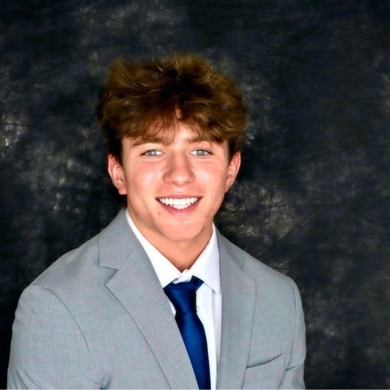

Rutgers Business School • Class of 2029
“Motivated and passionate student in the Rutgers Business School. Currently pursuing degrees in supply chain and BAIT. Expecting to graduate in May 2029. Hardworking and driven, with a desire to learn and succeed in the business field. Committed to working hard and serving my school, peers, employers, and community.”
Designed and built a homemade haptic VR vest integrating Python-based control logic and mechanical troubleshooting. Developed as part of a senior capstone project, combining hardware engineering and software development.
Currently developing a smartphone app that uses AI to scan pool test strips and recommend precise chemical treatments based on pool size and type. The app aims to simplify pool maintenance for homeowners and professionals.